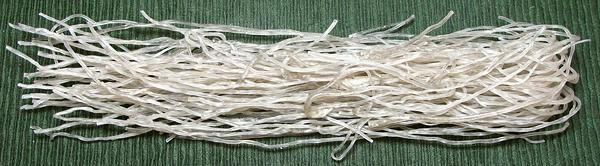

Sweet Potato Noodles
While Sweet Potato Noodles may have originated in China, they have
been of particular importance in Korea since the last half of the 20th
Century
Thin Korean Style
-
[#230; Dangmyeon (Korea); Mien Hàn Quoc (Viet)]

These noodles came to Korea from China in the last half of the 20th Century,
and are now very important to Korean cuisine. They are essential to most of
the famous Korean Japchae dishes. The photo specimens were made in China,
0.06 diameter by 22 inches folded length. Ingred: sweet potato starch, sulfur
dioxide, water. They cook to a firm gelatinous consistency. Flavor and texture
are pleasant and these noodles are much more durable in liquid recipes than
bean starch noodles. They are used in salads, cold dishes, appetizers, or as
an ingredient in soups and hot pots
Challenges:
Uncooked, these noodles are very stiff, difficult
to break, and impossible to cut. Even after an hour soaking, they are too
stiff to cut with a knife, but could then be cut to lengths with kitchen
shears. I cook them in a 3-1/2 quart sauté pan, 10 inches diameter,
into which they will fit. I prefer the "cut" version, which are 9 inches long,
but the folded 20 inch ones can also be used, working them in as they soften,
as you would spaghetti into a pot.
Cooking:
Boil until no longer stiff in the center (10 to 15
minutes). They should remain fairly firm and very slippery. Drain and refresh
with cold water. They are now recipe ready.
Recipe Prep:
Cooked, these noodles remain extremely slippery.
For soups, or any liquid dish eaten with a spoon, you want to cut them to no
longer than 1-1/2 inch, or you'll find them impossible to get into the spoon,
they'll just slip out. For dishes eaten with a fork or chopsticks, they are
probably best cut to 4 to 5 inches long.
More on Asian Noodles.
Broad Noodles
- [229 Sichuean Hot Pot Noodle;
Kuan Fen Tu Dou Fen Tiao (China)]
These noodles are much used in Hot Pot recipes, in Sichuan, China and in
Korea, but are also used in Salads and Stir Fries. The photo specimens were
made in Sichuan, China, 0.45 inch wide, 0.045 thick and 11 inches long.
Ingred: sweet potato starch.
Buying:
I have found these in a large Asian market in
Los Angeles (San Gabriel), but they are probably also available in some
Korean markets.
Cooking:
The package instructions were wildly optimistic.
In actuality: pour hot water over these noodles and let soak for at least
30 minutes. Drop them into boiling water and boil for 10 minutes or until
as tender as you need - for Hot Pots a little less tender than for other
uses, as they will get a little cooking in the pot. They are then ready
to be cut into desired lengths for recipes.
More on Asian Noodles.
Hot Pot Green Bean Stripe
- [290]
These noodles are used in Hot Pot recipes in China. The photo specimens
were made in Shanghai, China, 0.68 inch wide, 0.035 inch thick and 10.75
inches long. Ingred: sweet potato starch, water, salt.
Buying:
I have found these in a large Asian market in
Los Angeles (San Gabriel).
Cooking:
The package instructions were only in Chinese, but
the clock icon for soaking time suggests they were rather optimistic anyway.
Pour hot water over these noodles and let soak for at least 30 minutes. Drop
them into boiling water and boil for 15 minutes or until as tender as you
need - for Hot Pots a little less tender than for other uses. They are then
ready to be cut into desired lengths for recipes.
More on Asian Noodles.
pa_swpotz 210208 - www.clovegarden.com
© Andrew Grygus 2011 - agryg@clovegarden.com -
Photos on this page not otherwise credited are ©
cg1.
Linking to and non-commercial use of this page permitted.